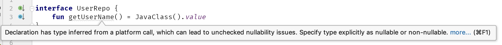

第3条：尽快消除平台类型
Kotlin引入的空安全是令人惊讶的。Java在社区中以空指针异常（NPE）而闻名，而Kotlin的安全机制使它们变得罕见甚至完全消除它们。但是有一点不能完全保证，那就是和没有空值安全的语言——如Java或C之间的互相调用。想象一下，我们使用一个Java方法，它声明String为返回类型。在Kotlin中它应该是什么类型？
如果它被@Nullable注解，那么我们就认为它是可以为空的，我们就把它认为为是一个String？如果它被@NotNull注解，那么我们就相信这个注解，并将它认为是一个String。但是，如果这个返回类型没有用这两个注解中的任何一个来注解呢？
// Java
public class JavaTest {
public String giveName() {
// ...
}
}
我们可能会说，那么我们应该把这样的类型当作可空的。这将是一种安全的方法，因为在Java中所有的东西都是可空的。然而，我们经常知道某些东西不是空值，所以我们最终会在代码的许多地方使用not-null（!!）断言。
真正的问题是当我们需要从Java中获取泛型对象时。想象一下，一个Java API返回一个完全没有注释的List\
// Java
public class UserRepo {
public List<User> getUsers() {
//***
}
}
// Kotlin
val users: List<User> = UserRepo().users!!.filterNotNull()
如果一个函数返回一个List\
变得复杂了：
val users: List<List<User>> = UserRepo().groupedUsers!!.map { it!!.filterNotNull() }
List至少有map和filterNotNull等函数。在其他类型中，可空性将是一个更大的问题。这就是为什么在Kotlin中，来自Java的、具有未知可空性的类型不是被默认为可空的，而是一种特殊的类型。它被称为平台类型。
平台类型——一种来自另一种语言的类型，具有未知的可空性。
平台类型在类型名称后面用一个感叹号!来表示，如String!。尽管这种记号不能在代码中使用。平台类型是不可表示的，这意味着人们不能在代码中明确地写下它们。当一个平台值被分配给Kotlin变量或属性时，它可以被推断出来，但不能被显式地设置。相反，我们可以选择我们期望的类型。要么是可空类型，要么是非空类型。
// Java
public class UserRepo {
public User getUser() {
//...
}
}
// Kotlin
val repo = UserRepo()
val user1 = repo.user // Type of user1 is User!
val user2: User = repo.user // Type of user2 is User
val user3: User? = repo.user // Type of user3 is User?
由于这一特性，从Java中获得泛型对象很容易
val users: List<User> = UserRepo().users
val users: List<List<User>> = UserRepo().groupedUsers
但问题是这仍然很危险，因为我们假设的非空的东西可能是空的。这就是为什么为了安全起见，我总是建议在我们从Java中获得平台类型时要非常认真地对待。记住，即使一个函数现在不返回null，也不意味着它在未来不会发生变化。如果它的设计者没有通过注解或在注释中描述它，他们可以在不改变任何契约的情况下引入这种行为。
如果你对需要与Kotlin互操作的Java代码有一定的控制权，请尽可能引入@Nullable和@NotNull注解。
// Java
import org.jetbrains.annotations.NotNull;
public class UserRepo {
public @NotNull User getUser() {
//...
}
}
当我们想很好地支持Kotlin开发者时，这是最重要的步骤之一（对Java开发者来说也是重要的信息）。在Kotlin成为一等公民之后，对Android API许多暴露的类型进行注释是最重要的变化之一。这使得Android API对Kotlin更加友好。
许多不同种类的注释都被支持，包括那些由：
JetBrains (org.jetbrains.annotations的@Nullable 和 @NotNull)
Android (androidx.annotation、com.android.annotations 以及 support库android.support.annotations 的 @Nullable 和 @NonNull from)
JSR-305 (javax.annotation的@Nullable,@CheckForNull 和 @Nonnull )
JavaX (javax.annotation的 @Nullable, @CheckForNull, @Nonnull )
FindBugs (edu.umd.cs.findbugs.annotations的 @Nullable, @CheckForNull, @PossiblyNull and @NonNull)
ReactiveX (io.reactivex.annotations的@Nullable和@NonNull from)
Eclipse (org.eclipse.jdt.annotation的 @Nullable 和 @NonNull from )
Lombok (lombok 的 @NonNull)
另外，你可以在Java中使用JSR 305的@ParametersAreNonnullByDefault注解来指定所有类型默认为Notnull。
在我们的Kotlin代码中，同样也有一些我们可以做的事情。出于安全考虑，我的建议是尽快消除这些平台类型。为了理解这个原因，请思考这个例子中 statedType 和 platformType 函数的行为方式的区别：
// Java
public class JavaClass {
public String getValue() {
return null;
}
}
// Kotlin
fun platformType() {
val value = JavaClass().value
//...
println(value.length) // NPE
}
fun statedType() {
val value: String = JavaClass().value // NPE
//...
println(value.length)
}
在这两种情况下，开发人员假设getValue不会返回null，但他或她错了。这在两种情况下都会导致NPE，但在发生错误的地方有区别。
在 statedType中，NPE将在我们从Java中获取值的同一行被抛出。错误很明显，我们错误地假设了一个非空的类型，但是得到了null。我们只需要改变它，并根据这个变化调整我们的其他代码。
在platformType中，当我们使用这个值为不可空类型时，NPE将被抛出，它可能是来自于一些更复杂的表达式中。作为平台类型的变量可以同时被视为可空和不空。这样的变量可能会被安全地使用几次，然后被不安全地使用，然后抛出NPE。当我们使用这样的属性时，类型系统并不能起到保护作用。这与Java中的情况类似，但在Koltin中，我们并不希望我们在操作对象的时候产生NPE。迟早可能会有人不安全地使用它，然后我们就会出现一个运行时异常，而其原因可能不那么容易被找到。
更危险的是，平台类型可能会被进一步传递。例如，我们可能将一个平台类型作为我们接口的一部分公开。
interface UserRepo {
fun getUserName() = JavaClass().value
}
在这种情况下，方法推断的类型是一个平台类型。这意味着任何人都可以决定它是否是可空的。人们可能会选择在定义中把它当作可空的，而在使用中当作不可空的：
class RepoImpl: UserRepo {
override fun getUserName(): String? {
return null
}
}
fun main() {
val repo: UserRepo = RepoImpl()
val text: String = repo.getUserName() // NPE in runtime
print("User name length is ${text.length}")
}
传递平台类型是一种隐患，它们是有问题的。为了安全起见，我们总是应该尽快地消除它们。在这种情况下，IntelliJ IDEA 用一个警告来帮助我们：

总结
来自另一种语言且具有未知可空性的类型被称为平台类型。由于它们很危险，所以我们应该尽快消除它们，不要让它们传播。使用注解来指定类型是一种很好的解决方式，使用这些注解在暴露的Java构造函数、方法和字段上指定其可空性。对于使用这些元素的Java和Kotlin开发者来说，这都会是宝贵的信息。